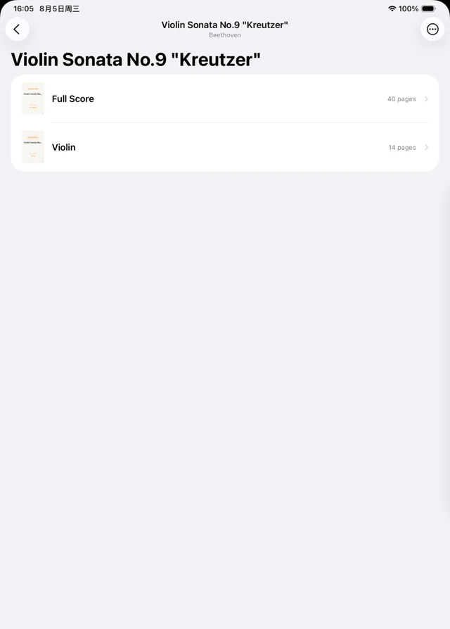

Bowmark
为作品而组织，为演奏而阅读。
一个可以写字的 iPad 谱台。Bowmark 把散落的 PDF 组织成作品、乐章与分谱，并为琴架上的翻页、缩放与 Apple Pencil 批注重写阅读器。问题来自我在乐团排练里的亲身经历，产品已经回到同一个乐团里使用。
- 角色
- 独立完成：定义、设计、开发编排、真机验收
- 周期
- 2026.07 – 今
- 平台
- iPadOS 18 及以上，Apple Pencil
- 技术
- Swift 6 · SwiftUI · SwiftData · PDFKit · PencilKit · VisionKit
- 状态
- 真机 MVP，已在校乐团推广使用
- 链接
- GitHub



- 每个技术决策先成文，再交给 Coding Agent 实现
- 14篇 RFC
- Swift 6 应用本体
- 65个源文件
- 含两次数据模型迁移的文件级测试
- 31个测试文件
- 处纵向滚动。阅读器只有离散的横向翻页
- 0
01问题Problem
乐谱不是一叠 PDF。
我在校管弦乐团拉小提琴。同一部作品同时有总谱、不同乐器的分谱、多个乐章和演奏版本，而文件管理只看得见一份份彼此无关的 PDF。进入阅读之后，连续滚动、常驻的工具栏和通用的批注逻辑，也没有一样是围绕排练与演出的节奏设计的。
我又访谈了乐团里不同声部的乐手，确认这不是个人习惯问题：分谱版本在排练中被反复混淆；排练时写下的指法与弓法，换一份 PDF 就失去了上下文。
样本说明：访谈对象是身边的乐手，数量少，非结构化。它足够支撑产品方向，不足以支撑功能优先级。
02竞品判断Competition
真正的对手不是 forScore，是 GoodNotes。
专业的乐谱阅读器功能完备，但对学生有付费门槛。结果是身边练琴的人，实际在用 GoodNotes、预览和系统文件凑合，而且凑合得还行。付费门槛把学生推向了笔记类应用，这个替代行为本身就是市场信号。
| 比较项 | 乐谱类应用 forScore、Newzik | 笔记类应用 GoodNotes | Bowmark |
|---|---|---|---|
| 解决了 | 谱面阅读 | 书写手感 | 作品的组织，以及依附于谱面的批注 |
| 留下了 | 付费门槛；作品层的组织 | 不理解乐谱的结构：什么是作品、乐章与分谱；老师的标记和自己的标记分不开 | 见下文的范围取舍 |
| 竞争维度 | 功能完备度 | 书写手感与管理成本 | 管理侧比笔记应用懂乐谱；书写侧以打平它为设计目标 |
03范围Scope
最重要的决定，是砍掉了什么。
最初的设想有两层：乐谱的数据库结构，也就是作品、乐章、分谱与版本的关系；以及谱面的结构化识别，识别小节与音符，让标记锚定在乐理对象上。我砍掉了第二层，保留第一层。
取舍：谱面识别，做还是不做？
产品范围
- 为什么不做
- 识别依赖光学乐谱识别，准确率不稳定，失败模式极差：标记锚错了小节，比没有锚定更糟。
- 判断
- 它会把项目从「一个能用的谱台」变成「一个识别系统」。识别系统在做出来之前，没有任何可用性。
- 换来什么
- 作品与乐章的关系靠人工录入就能成立。当天就能上谱台。
- 代价
- 放弃了按小节跳转、标记跟随移调、自动翻页这一整类能力。这些是真实的损失，不是「本来也不重要」。
- 保留下来的模型
- 一份 PDF 是一个乐谱单元；作品可选地把乐章与分谱聚在一起，用整数排序键而不是字典序。
- 一个细节
- 作品编号是不设限的字符串。Op. 27 No. 2、BWV 1004、K. 218 都能原样往返，不解析目录制式。
04原则Principles
三条原则，都来自演奏本身。
一 · 演奏者不能停
- 离散的横向翻页，阅读时没有纵向滚动
- 竖屏一页，宽横屏两页对开，像一份摊开的分谱
- 缩放 1.0 永远等于适合视口
二 · 控件不与书写争夺输入
- 悬浮控件三秒后自动隐藏
- 手指点击切换；Pencil 接触永不触发
- 320 pt 的悬浮侧栏，从不改变乐谱的尺寸
三 · 不静默丢失用户的东西
- 批量编辑有「多个值」状态，不压平没碰过的字段
- 按内容的 SHA-256 指纹识别重复，改名重导入也认得
- 删除作品或文件夹，绝不级联删除乐谱
05扫描Capture
消除手影，但不擦掉铅笔痕迹。
拍摄或选图之后、任何文件产生之前，先进入全屏审阅：旋转、裁切、删除、重排、追加。相机取景与透视检测交给系统；快门之后的一切，由 Bowmark 负责。
默认的增强不是二值化，而是平场校正：用页面除以它自己的模糊副本。原因是一页乐谱上不存在可用的全局阈值：高到能去掉手影，就会擦掉五线；低到能保住五线，就留下了手影。而铅笔写下的标记，正是用户最在意的东西。
06过程Process
为一个足够具体的场景，重写阅读器的默认假设。
我先用 PRD 与持续演进的 RFC 固定产品边界，再编排 Coding Agent 完成 Swift 实现；方案取舍、代码审查、Git 变更管理、回归测试与 iPad 真机验收由我负责。开发中逐步替换了通用的 PDF 视口，建立 Bowmark 自己的分页、缩放、预渲染与墨迹坐标系统。
一次结构层的诊断：封面一直在转圈
曲库 · 封面
- 现象
- 新导入的乐谱，封面的加载动画转个不停；旧的乐谱一切正常。
- 补丁式的解法
- 加超时，加重试，加一个刷新按钮。每一个都能让症状消失。
- 根因
- 没有任何一方拥有这次读取。格子只在出现的那一刻看一眼磁盘，而导入在封面渲染完成之前就插入了记录。
- 方案
- 解法落在所有权上：先渲染封面再插入记录，永不发布半成品；所有写入路径收进同一个服务。
- 判定
- 缺失的文件解析为「缺失」，永不解析为「加载中」。一个永远不结束的加载动画，是在谎称有工作正在进行。
- 结果
- 解决的是「这一类问题以后不再出现」，而不是「这个 bug 修好了」。
07结果与回顾Outcome
在模拟器上正确，不等于在琴架上可靠。
当前的 MVP 覆盖作品化曲库、总谱与分谱的组织、文件与相机导入、页面增强、沉浸式阅读、标记图层和 Apple Pencil 自由批注，并在真机上验证了持久化与缩放的稳定性。它已经在校乐团内推广使用，真实的排练成为后续迭代的需求来源与验收环境。
回顾：模拟器无法复现真实的 Pencil 延迟、内存压力与缩放过程中的墨迹行为。早期把设备验证放得太晚，快速翻页的白屏和墨迹偏移到后期才暴露。现在每一项阅读器的性能决策，都必须带着真机场景验收。练习中不会打断演奏，才算完成。
测试抓不到的那一类
缩放时墨迹相对谱线的抖动，前后修了四轮。这几个缺陷没有一个能被单元测试抓到：判定对错的状态，只存在于真机的渲染进程里。我的判断是两套坐标系在各算各的，于是停止打补丁，交给下一篇 RFC 从结构上解决。
下一步
把指法、弓法和连弓从自由墨迹，转化为可以选择、修改与重新渲染的演奏对象。